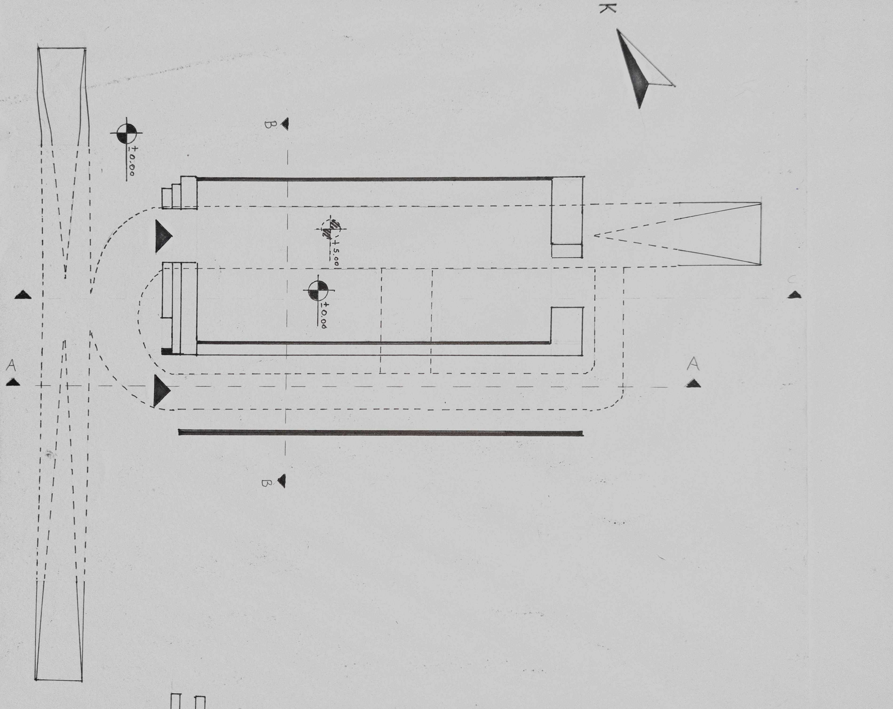
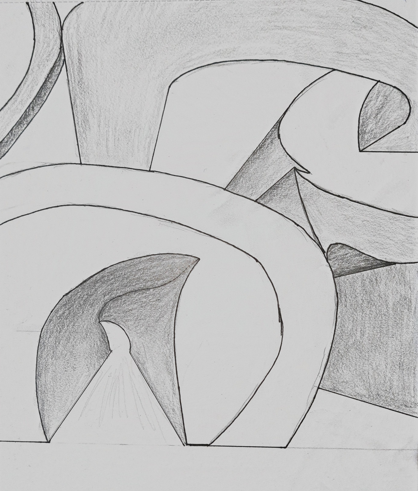
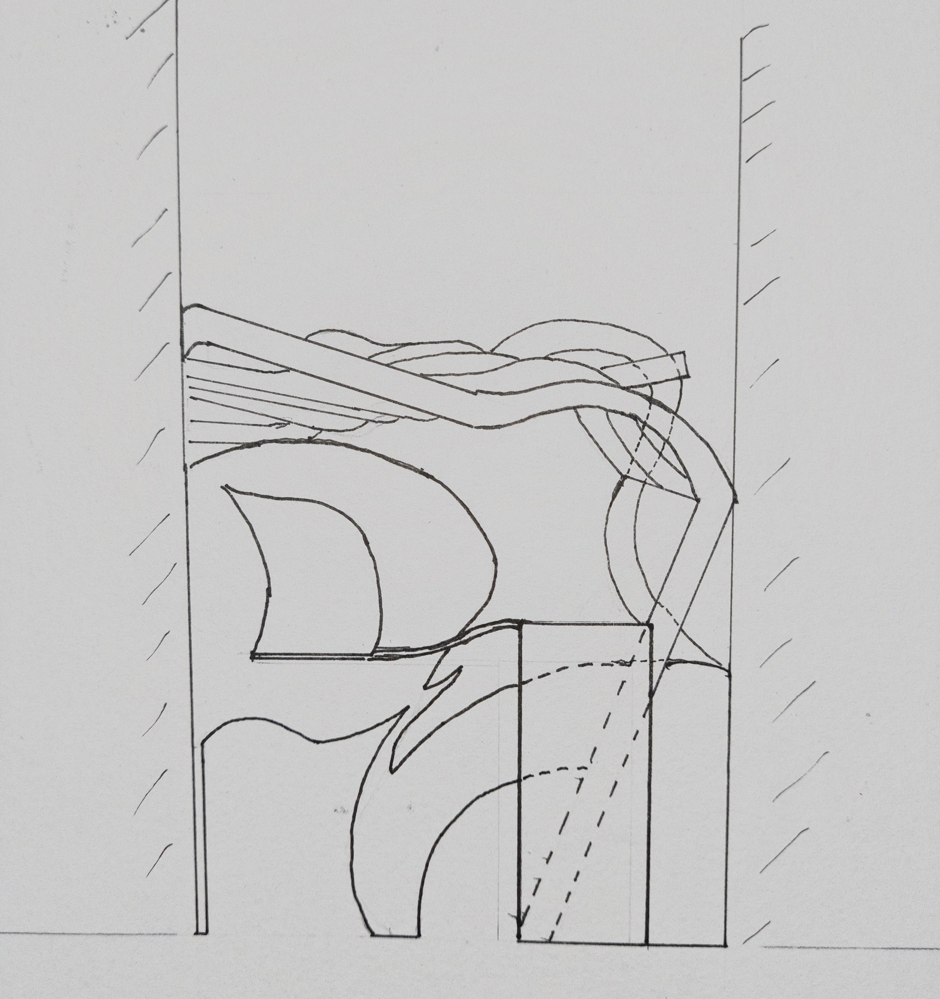

Wave Monument (Dalga Anıtı)
An analysis of monumental design where form, mass, and structural flow merge with plastic arts.
View Full Presentation (PDF)
 Site Plan
Site Plan

Floor Plan
 Section A-A
Section A-A

Perspective Sketch
 Front Elevation
Front Elevation

Rear Elevation
Digital Design Tools & Parametric Modeling
Urban Planning & Wind Direction Studies
Structural Analysis & Mechanics